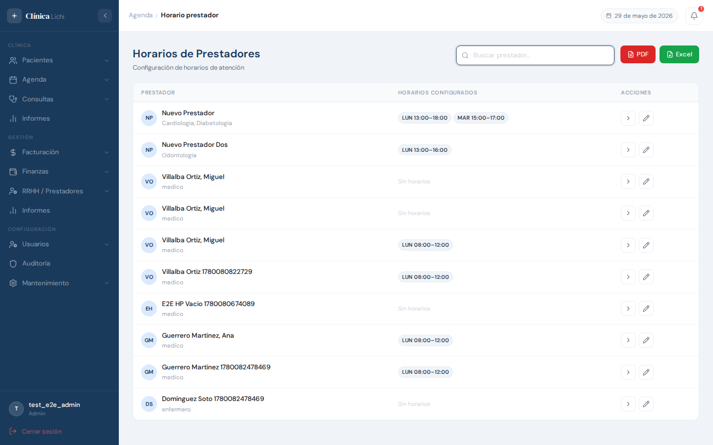
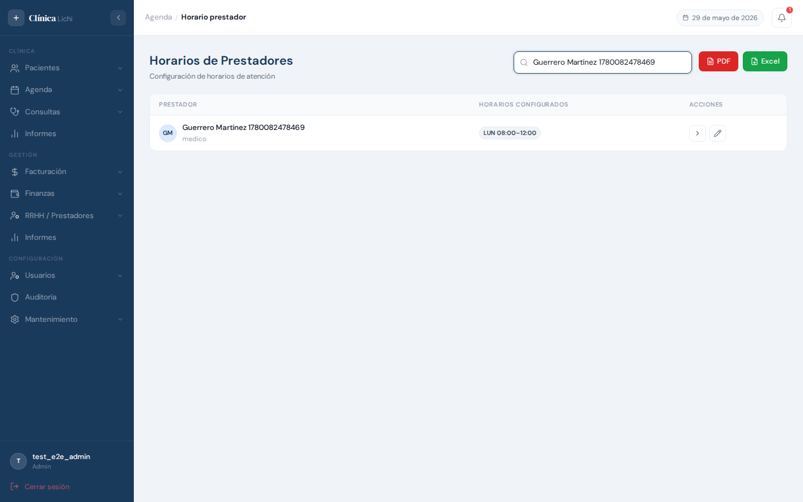
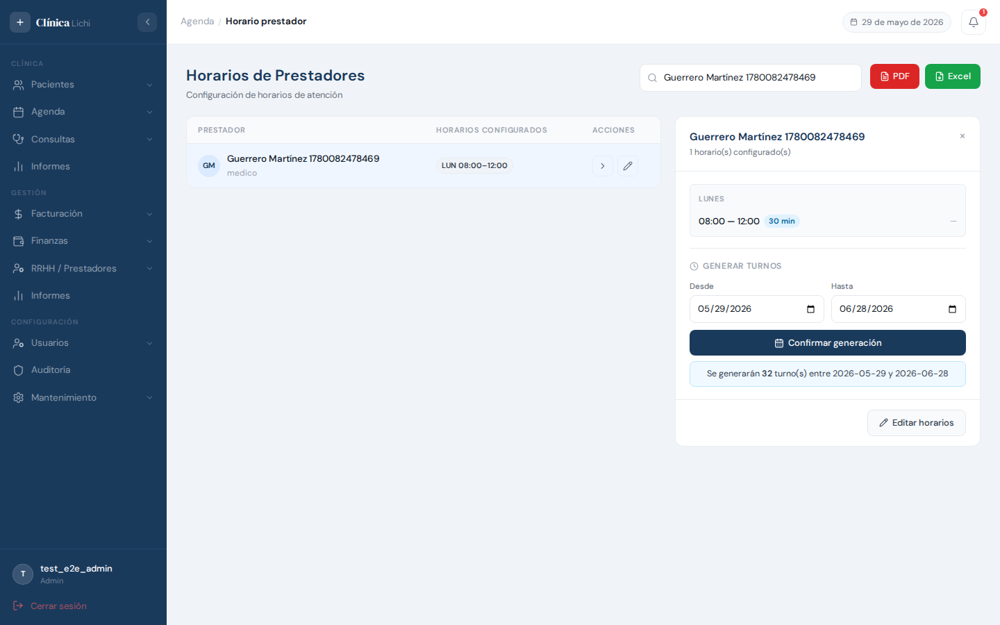
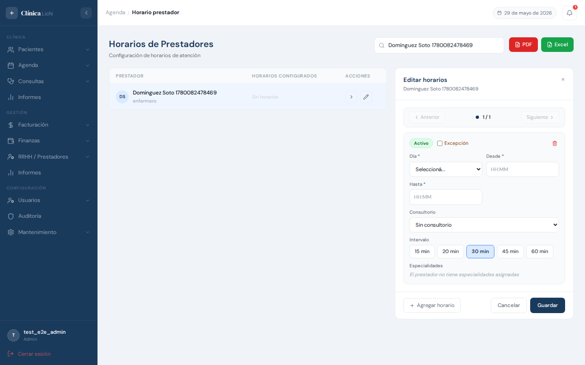
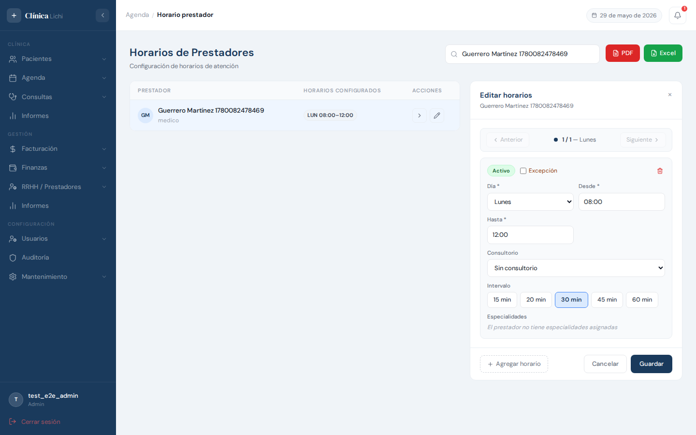
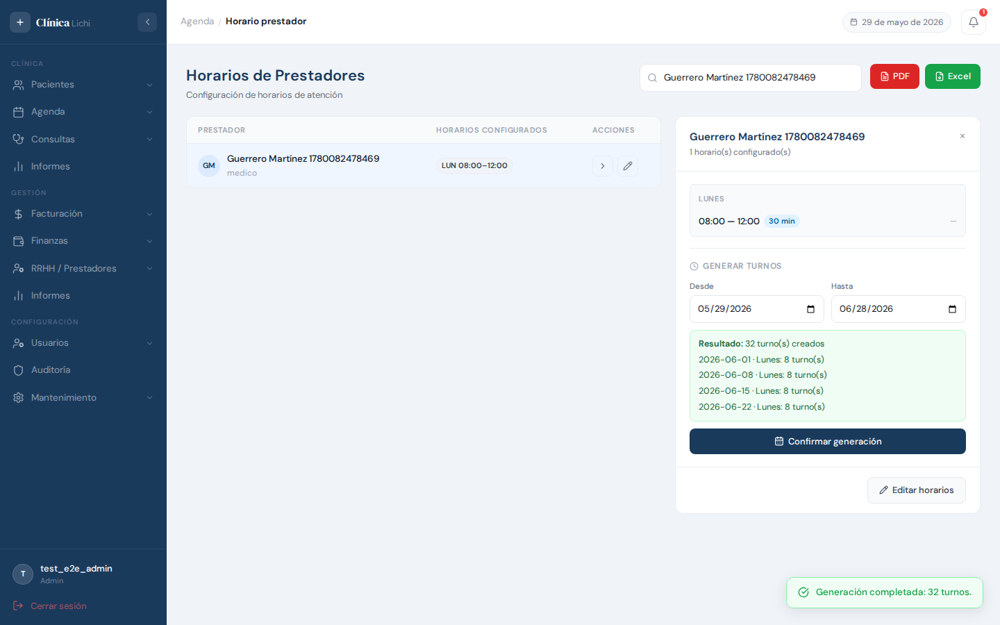
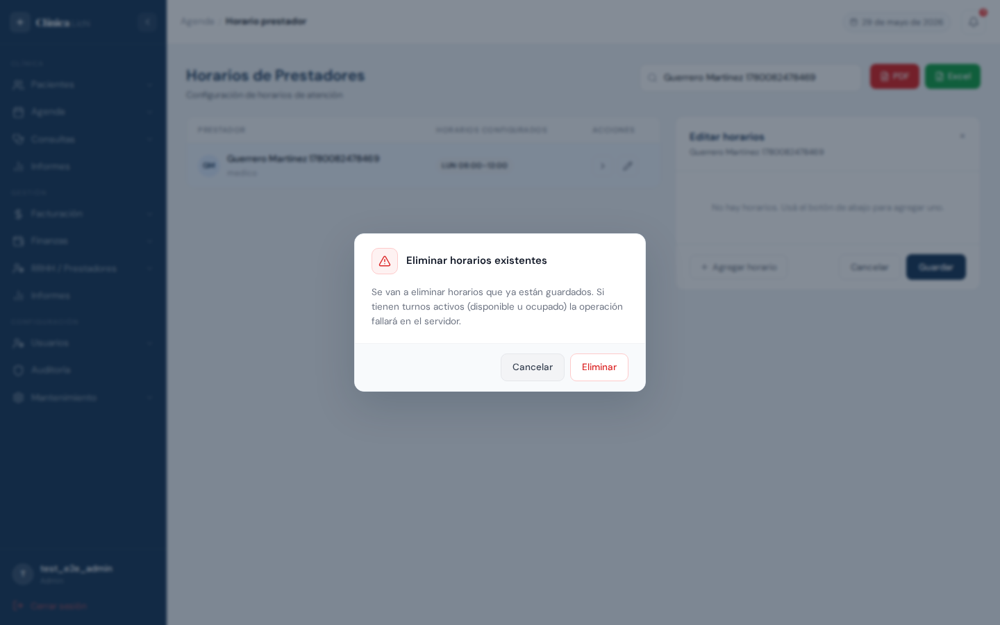
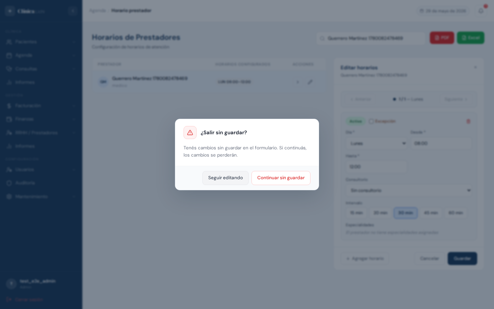

Descripción del módulo
El módulo Horario Prestador permite configurar los horarios de atención de cada prestador de la clínica y generar los turnos disponibles en la Agenda. Cada prestador puede tener múltiples horarios: uno por cada día de la semana en que atiende, con su franja horaria, duración de turno, consultorio y especialidades.
También admite excepciones: horarios puntuales para una fecha específica (útil para guardias o atenciones extraordinarias), con el mismo nivel de configuración que los horarios semanales.
| Acción | Administrador | Recepcionista |
|---|---|---|
| Ver listado y horarios | ✅ | ✅ |
| Configurar / editar horarios | ✅ | ✅ |
| Generar turnos | ✅ | ✅ |
| Eliminar horarios | ✅ | 🚫 (el backend lo bloquea) |
| Generar PDF / Excel de horarios | ✅ | ✅ |
Acceder al módulo
En el menú lateral izquierdo, dentro del grupo Agenda, hacé clic en Horarios. Esta opción es visible para Administrador y Recepcionista. Médicos y secretarias también pueden acceder desde su sesión respectiva.
Pantalla principal — listado de prestadores
Al ingresar se muestra la lista de todos los prestadores activos. Para cada uno se muestran las pills de horarios configurados: cada pill indica el día abreviado, la hora de inicio y fin. Si el horario está inactivo, la pill aparece con menor opacidad. Si es una excepción, lleva un ícono de advertencia.

Columnas de la tabla
| Columna | Descripción |
|---|---|
| Prestador | Avatar con iniciales, nombre completo y cargo o especialidades. |
| Horarios configurados | Pills con el día abreviado y la franja horaria de cada horario activo del prestador. Los horarios inactivos aparecen tachados. Si no tiene horarios, muestra "Sin horarios". |
| Acciones |
Ver — abre el panel en modo detalle de horarios
Editar — abre el panel en modo edición de horarios
|
Reportes — PDF y Excel
Los botones PDF y Excel en la barra superior generan un informe con todos los horarios activos de todos los prestadores, agrupados por prestador e incluyendo día, franja, intervalo, especialidades y estado.
Buscar un prestador
El campo de búsqueda filtra la lista en tiempo real por nombre completo, número de documento o número de matrícula.

| Comportamiento | Detalle |
|---|---|
| Por nombre | Filtra por el nombre completo del prestador (sin distinción de mayúsculas). |
| Por documento | Filtra por el número de documento de identidad. |
| Por matrícula | Filtra por el número de matrícula profesional. |
| Sin resultados | La tabla muestra el estado vacío: "No se encontraron prestadores". |
| Limpiar | Borrá el texto para volver al listado completo. |
Ver horarios de un prestador
Hacé clic en cualquier parte de una fila o en el botón › para abrir el panel lateral derecho con todos los horarios del prestador en modo lectura. La fila seleccionada queda resaltada en azul.

El panel de vista muestra:
- Horarios agrupados por día de la semana
- Franja horaria (desde–hasta), duración de turno (badge azul) y badge INACTIVO si aplica
- Consultorio y especialidades de cada franja
- Excepciones con su fecha puntual indicada
- Sección Generar turnos al pie del panel (ver sección 07)
Para cerrar el panel hacé clic en la × del encabezado.
Configurar horarios
Hacé clic en el ícono de lápiz de una fila o en el botón Editar horarios del panel de vista. El panel cambia al modo edición mostrando los horarios actuales del prestador como bloques editables.

Agregar un horario
- Abrí el panel en modo edición haciendo clic en ✏️ de la fila.
- Hacé clic en + Agregar horario en el pie del panel.
- Completá los campos del bloque que apareció.
- Hacé clic en Guardar o presioná F10.

Campos de cada bloque de horario
| Campo | Obligatorio | Descripción |
|---|---|---|
| Día de la semana | ✅ Sí | Lunes a Domingo. No requerido si el horario es una excepción. |
| Desde | ✅ Sí | Hora de inicio de atención (formato HH:MM). |
| Hasta | ✅ Sí | Hora de fin de atención. Debe ser posterior a "Desde". |
| Estado | No | Toggle Activo/Inactivo. Los horarios inactivos no generan turnos. |
| Excepción | No | Checkbox. Al activarlo reemplaza el selector de día por un campo de fecha puntual. |
| Fecha puntual | Si excepción ✅ | Fecha exacta del horario de excepción. El día de la semana se asigna automáticamente. |
| Consultorio | No | Consultorio donde se realiza la atención. |
| Intervalo | No | Duración de cada turno: 15, 20, 30, 45 o 60 minutos. Por defecto 30 min. |
| Especialidades | No | Especialidades médicas que se atienden en esta franja horaria. |
Navegar entre múltiples horarios
Cuando el prestador tiene más de un horario configurado, el panel muestra una barra de navegación con puntos que representan cada horario. Usá los botones Anterior y Siguiente para moverse entre ellos, o hacé clic directamente en cada punto.
Generar turnos
Desde el panel en modo ver, al pie de los horarios, encontrás la sección Generar turnos. Esta función crea automáticamente los turnos disponibles en la Agenda para el rango de fechas indicado.

- Abrí el panel del prestador en modo ver (clic en la fila o en el botón ›).
- Bajá hasta la sección Generar turnos.
- Ajustá el rango de fechas Desde y Hasta. Por defecto abarca desde hoy hasta 30 días.
- Antes de confirmar, el panel muestra un preview con el total estimado de turnos a generar.
- Hacé clic en Confirmar generación.
- El sistema genera los turnos y muestra el detalle por fecha.
Eliminar horarios
Para eliminar un horario, abrí el panel en modo edición, hacé clic en el botón 🗑️ del bloque que querés quitar y luego hacé clic en Guardar. Si estás eliminando horarios que ya estaban guardados, aparece un diálogo de confirmación.

- Abrí el panel del prestador en modo edición (botón ✏️).
- Ubicá el bloque del horario a eliminar y hacé clic en el ícono 🗑️ del bloque.
- Hacé clic en Guardar.
- Aparece un diálogo de confirmación — hacé clic en Continuar.
- El horario se elimina. Se muestra una notificación verde.
Protección de cambios sin guardar
El sistema activa la protección cuando el panel está en modo Editar. Al intentar cerrar con la ×, cancelar o navegar a otro módulo, aparece un diálogo de advertencia.

| Opción | Qué hace |
|---|---|
| Seguir editando | Cierra el diálogo y vuelve al formulario con los datos intactos. |
| Continuar sin guardar | Descarta los cambios y cierra el panel (o navega al destino solicitado). |
- Al cerrar el panel con la × en modo edición
- Al hacer clic en Cancelar en modo edición
- Al hacer clic en otra fila de la tabla con el panel en modo edición
- Al navegar a otro módulo desde el menú lateral
Mensajes de error frecuentes
| Mensaje / Situación | Causa | Qué hacer |
|---|---|---|
| "Completá los campos requeridos marcados en rojo." | Intentaste guardar con algún bloque incompleto: falta el día, la hora desde o la hora hasta. | Completá los campos resaltados en rojo antes de guardar. El sistema te lleva automáticamente al bloque con errores. |
| "Ya existe un horario para este prestador con el mismo día y hora de inicio." | Dos bloques del mismo prestador tienen el mismo día de semana y la misma hora de inicio. | Cambiá la hora de inicio o el día de uno de los horarios duplicados. |
| "La fecha 'Hasta' no puede ser menor a la fecha actual." | El rango de generación termina en una fecha pasada. | Ajustá la fecha "Hasta" a una fecha futura o igual a hoy. |
| "No se puede eliminar un horario con turnos activos." | El horario tiene turnos en estado disponible, ocupado o realizado. | Cancelá los turnos activos desde el módulo Agenda y volvé a intentarlo. |
| El modal no cierra tras hacer clic en Guardar | Error de validación o error de la API (ej: duplicado de horario). | Revisá el mensaje de error en la parte superior del panel y corregí el campo indicado. |
Comportamientos esperados que pueden confundirse con errores
| Situación | Explicación |
|---|---|
| El botón "Confirmar generación" está deshabilitado | El prestador no tiene horarios activos. Configurá al menos un horario con estado Activo. |
| La generación dice "0 turnos creados" | Ya existen turnos para esas fechas y horarios. La generación no crea duplicados. Esto es correcto. |
| Un bloque en naranja/ámbar muestra "Este horario se superpone con..." | Dos horarios del mismo prestador se solapan en la misma franja del mismo día. No bloquea el guardado, pero conviene corregirlo para evitar confusiones en la agenda. |
| El día de la semana se asigna automáticamente al marcar "Excepción" | Al ingresar la fecha puntual, el sistema detecta el día de semana correspondiente y lo asigna internamente. No es necesario seleccionarlo manualmente. |
| El panel no muestra el listado general de prestadores | Estás conectado con rol Médico o Secretaria de médico. Estos roles ven directamente su propio prestador o el médico asignado, sin la lista general. |